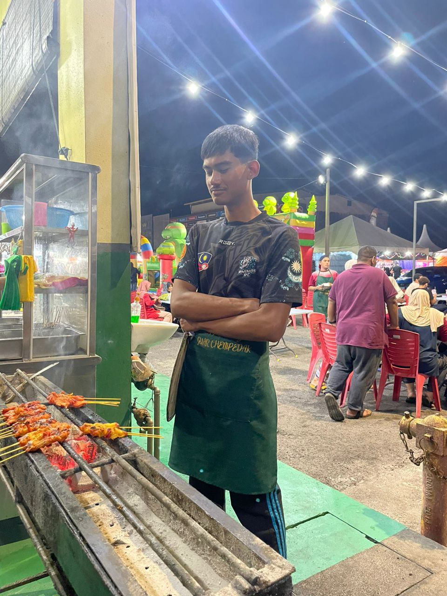

This is a resume I make when I was still studying for STPM. I need to make this resume because I join an online public speaking competition. By the way, this is a fake resume, just for clarification.
At Satay Semeling
This is a picture of At Satay Semeling, Guar Chempedak.
I work at At Satay Semeling as a waiter, then after a while I work as the cook for the "satays" then stay as the cook until now. Even now I still go to work there on the weekend.

This is a picture of me when I work there during this year Eid Mubarak.